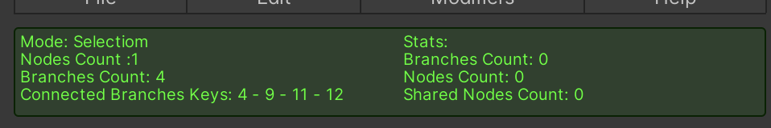

Debug
The Debug area in the Spline Plus R inspector is very useful for tracking your work. It is divided into two sections: the left section for selection data and the right section for general statistics data.

Selection
Mode
Current Mode Display
The current mode will be displayed, with the following possible modes:
- Selection: For selecting nodes and branches.
- Add: For adding nodes and branches.
- Edit: For editing the selected node's Normal/Speed/Scale/Chamfer and branch smoothness.
Nodes Count
Displays the count of selected nodes. If only one branch is selected, it will also display the node index.
Branches Count
Displays the count of selected branches. If only one branch is selected, it will also display the branch key.
Connected Branches Keys
If only one node is selected, this will display all the branch keys associated with the selected node.
Stats
Nodes Count
The total number of nodes.
Branches Count
The total number of branches.
Shared Nodes Count
The total number of shared nodes.